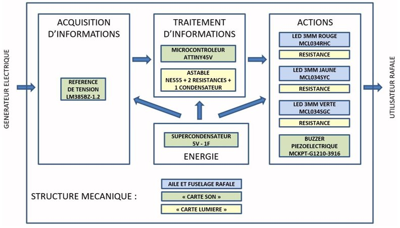
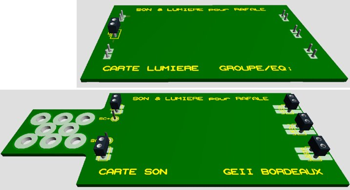
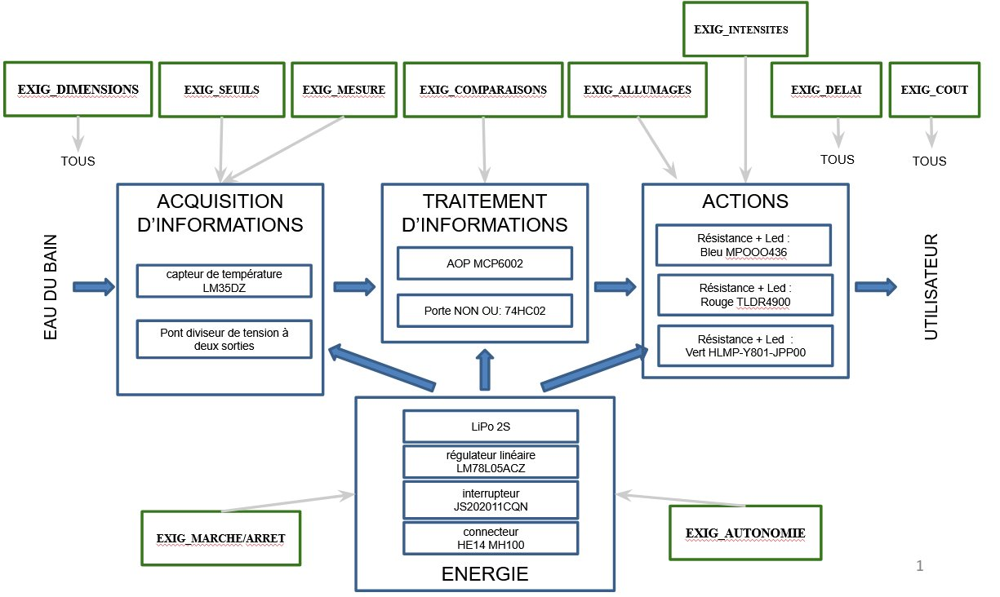
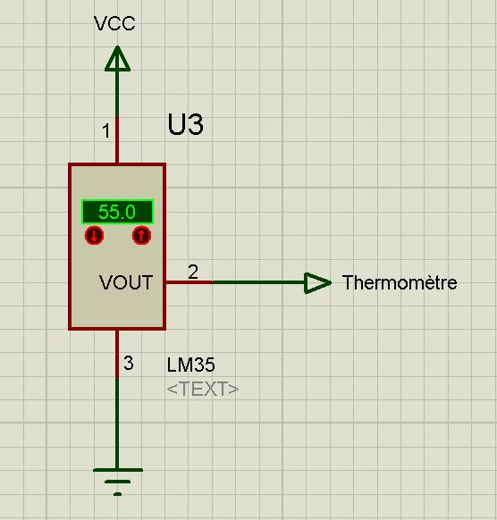
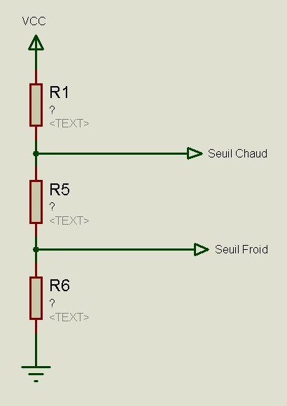

J'identifie les fonctions demandées
à la lecture du cahier des charges
Au cœur de toute conception en GEII, la lecture du cahier des charges est le point de départ incontournable. Cette compétence consiste à extraire, depuis un document client structuré, l'ensemble des exigences fonctionnelles d'un produit — et à les organiser en une architecture cohérente qui guidera toute la conception.
BUT 1 · SAÉ S1
SLR — Son et Lumière pour Rafale
Pour ce premier projet, j'ai découvert ce qu'est un cahier des charges industriel structuré. Le client fictif Toy Corporation décrivait un système sonore et lumineux à intégrer dans une miniature de Rafale, avec des exigences numérotées (EXIG_XXX). J'ai lu ce document en intégralité pour en extraire toutes les fonctions à remplir.
J'ai identifié trois grandes familles de fonctions : alimentation (EXIG_AUTONOMIE), fonctions lumineuses (EXIG_ALLUMAGES, EXIG_INTENSITES) et fonctions sonores (EXIG_RETENTISSEMENT). Cette lecture m'a conduit à partitionner le système en deux sous-cartes — carte son et carte lumière — reflétant directement la séparation des exigences.
Le synoptique que j'ai produit fait apparaître quatre blocs : acquisition (microcontrôleur ATtiny45V, référence LM385BZ), traitement, actions (LEDs rouge, jaune, verte et buzzer piézoélectrique) et énergie (supercondensateur 5V-1F). C'est sur ce projet que j'ai acquis la méthode fondamentale : relier une exigence client à un bloc fonctionnel tracé dans le DDC.

Figure 1 : Synoptique fonctionnel du SLR — décomposition en blocs issue du cahier des charges

Figure 2 : Vue 3D préliminaire — carte son et carte lumière résultant de la partition fonctionnelle
BUT 1 · SAÉ S1
TDB — Thermomètre de Bain pour Bébé
Avec le TDB, j'ai travaillé sur un cahier des charges plus dense : le client Baby Corporation décrivait un thermomètre électronique pour bain de bébé avec des exigences précises de mesure (EXIG_MESURE : 0–50 °C), de seuils (EXIG_SEUILS : froid 36 °C, chaud 39 °C) et d'allumage de LEDs (EXIG_ALLUMAGES). Ma première tâche a été de lire ce CdC pour en dégager une architecture complète.
J'ai co-rédigé les paragraphes CPR_ARCHITECTURE et CPR_COMPARAISONS du DDC avec Baptiste Masiero. Nous avons identifié quatre étages : acquisition (LM35DZ dans l'eau du bain), génération des seuils (pont diviseur à deux sorties), comparaison (AOP MCP6002 et porte NON OU 74HC02) et action (LEDs bleue, rouge, verte). L'exigence EXIG_SEUILS nous a conduits à concevoir un pont produisant deux tensions de référence distinctes.
C'est le projet où la compétence C.1 s'est vraiment structurée pour moi : passer d'un texte client à un synoptique rigoureux, où chaque exigence est reliée à un étage technique traçable et où le choix de chaque composant se justifie par une lecture précise du CdC.

Figure 3 : Synoptique fonctionnel du TDB — décomposition issue du cahier des charges (§CPR_ARCHITECTURE)

Figure 4 : Capteur LM35DZ (simulation à 55 °C) — étage d'acquisition issu de EXIG_MESURE

Figure 5 : Pont diviseur — seuils Froid/Chaud issus de EXIG_SEUILS (§CPR_COMPARAISONS)
BUT 1 · SAÉ S2
KAH — Kart à Hélice
Le projet KAH marque une montée en complexité décisive : le système comprend deux sous-systèmes distincts — un émetteur (télécommande) et un récepteur (le kart) — chacun avec ses propres fonctions mécaniques, électroniques et informatiques. J'ai dû produire deux synoptiques complets depuis une lecture rigoureuse du CdC.
J'ai co-rédigé CPR_RCPT_DIMENSIONS avec Mathis Raclet : gabarit de la carte récepteur (100 × 75 mm, quatre trous Ø 3 mm), placement des connecteurs moteur/servo côté droit, récepteur IR côté hélice, LEDs centrées pour leur visibilité. J'ai également co-rédigé CPR/CDT_RCPT_TRAITEMENT et CPR_RCPT_SECURITE, identifiant le rôle de l'ATmega328P dans le décodage NEC et l'arrêt moteur en l'absence de signal.
J'ai également co-rédigé CDT_RCPT_ENERGIE et CDT_RCPT_INTERRUPTEUR avec Baptiste Masiero : dimensionnement de la batterie LiPo 2S 1000 mAh depuis la consommation totale calculée (2,673 A à mi-puissance), câblage de l'interrupteur en série. J'ai rédigé seul CDT_RCPT_SCHEMA. Ce projet conclut la C.1 en BUT 1 avec une traçabilité complète sur un système bi-cartes.

Figure 6 : Architecture fonctionnelle de l'émetteur KAH (§CPR_EMTT_ARCHI_ELEC)

Figure 7 : Architecture fonctionnelle du récepteur KAH (§CPR_RCPT_ARCHI_ELEC)